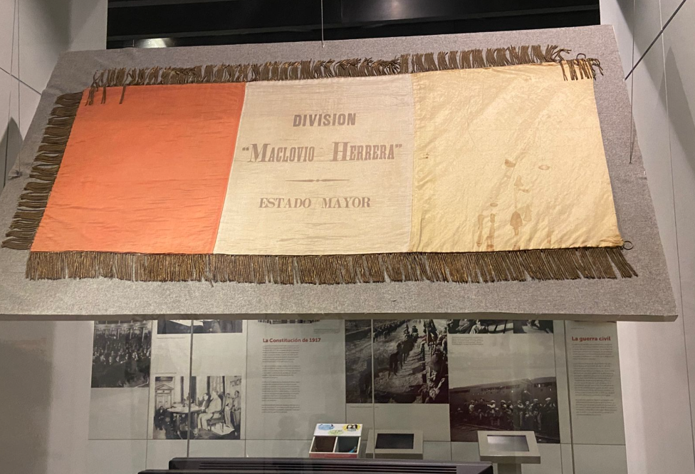
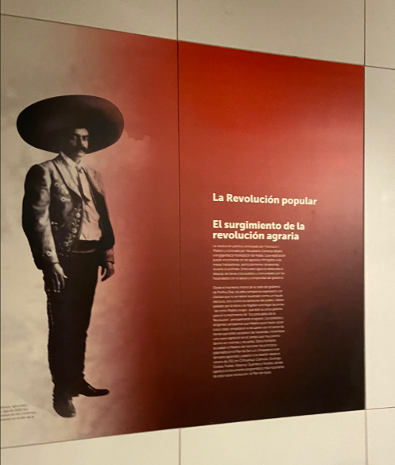
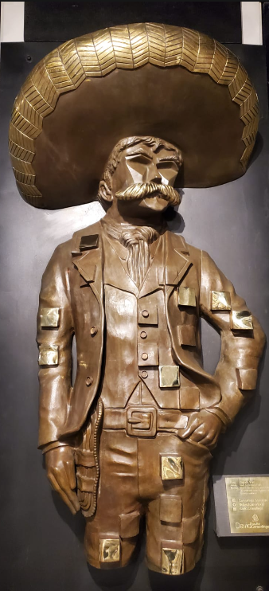

Sala 5 - La revolución popular
La revolución popular
Más allá de las leyes y los tratados, la Revolución fue un movimiento de raíces profundas. Esta sala rinde homenaje a la participación popular, donde las demandas de tierra, justicia y dignidad de las clases más desprotegidas se convirtieron en el motor imparable del conflicto armado.
Bajo el liderazgo de Emiliano Zapata, el Ejército Libertador del Sur dio voz a siglos de despojo campesino. Aquí se analiza el Plan de Ayala no solo como un documento militar, sino como el estandarte de una lucha radical por la restitución de las tierras, la cual se convirtió en la columna vertebral de la justicia social en México
Desde las llanuras de Chihuahua, la División del Norte avanzó como una tormenta. Revive la historia de Francisco Villa y sus 'Dorados', un movimiento de hombres libres que, con valentía y estrategia, transformaron el desorden de la batalla en un reclamo legítimo por una vida más justa.


